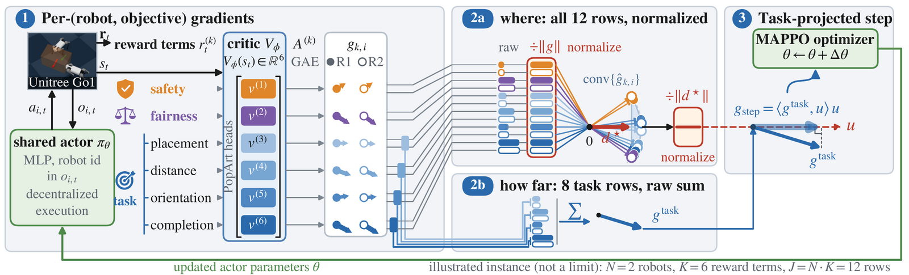
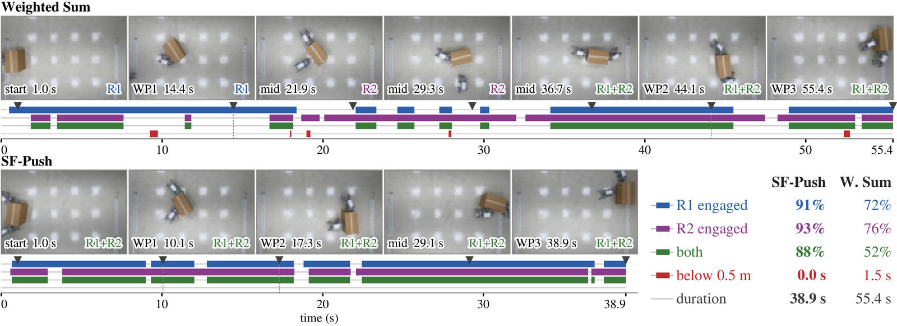
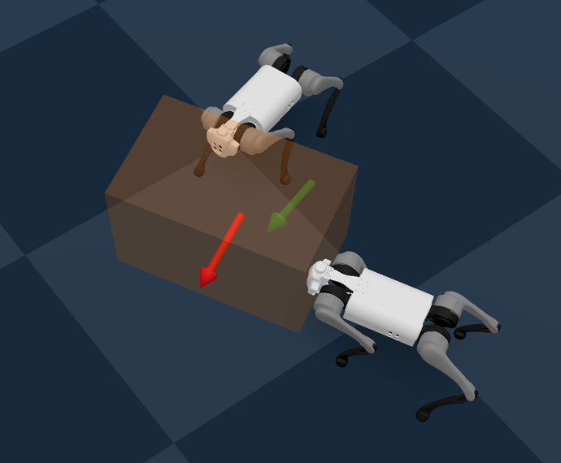
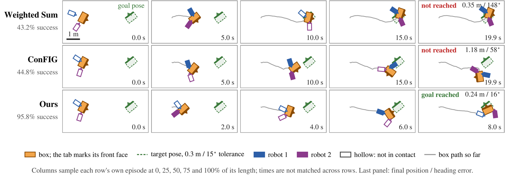
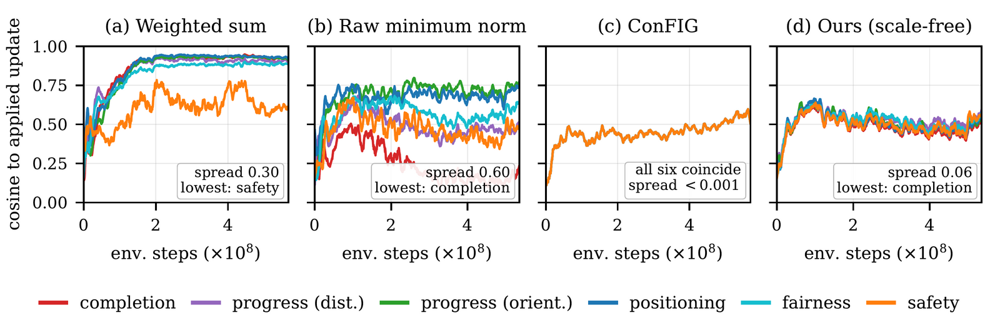

This figure shows the baseline, not our method. It is what a hand-weighted scalar
reward does on hardware: the box still reaches every waypoint, but the robots close inside
the safety distance and one of them stops contributing.
SF-Push
Safe and Fair Pose-to-Pose Collaborative Transport
with Multiple Quadruped Robots
94.9%
success on the hardest goals
strongest baseline: 56.7%
88%
of the hardware run with both robots engaged
weighted sum: 52%
0.60 m
minimum inter-robot separation
weighted sum: 0.37 m, inside the 0.5 m limit
Abstract
Collaborative box pushing by multiple quadrupeds requires the team to reach a target pose, stay safely apart, and keep both robots engaged. Safety and contribution fairness restrict how the team moves without rewarding task completion, so a scalar reward must fix their trade-off with task progress in advance, and with hand-tuned weights both failures appear: one robot disengages for long stretches, and when both push they come closer than the safety distance despite the penalty. We formulate collaborative pushing as a multi-agent multi-objective MDP whose objectives play different roles in the policy update, and train a shared policy with SF-Push, which forms one policy gradient per (robot, objective) pair, takes its direction from a minimum-norm combination of all the unit-normalized gradients, and its scale from the summed task gradient alone, so no trade-off weights are tuned. In simulation SF-Push reaches 99.6% success on nominal goals against 69.1%, 97.3% and 90.6% for a weighted sum, ConFIG and GCR-PPO, with the least time in unsafe proximity of any method on those goals, and keeps 94.9% on the hardest goals, where the strongest baseline reaches 56.7%. On two Unitree Go1 robots SF-Push keeps both engaged for 88% of a three-waypoint course at a minimum separation of 0.60 m, while the weighted-sum policy alternates which robot pushes, keeps both engaged for only 52%, and closes to 0.37 m, inside the 0.5 m requirement.
Simulation results
Collaborative pose-to-pose pushing across three goal settings. Mean ± std over independent training runs. All methods combine the same twelve per-(robot, objective) gradients under identical rewards, critic and hyperparameters, so only the combination rule differs. Bold marks the best value per setting — SF-Push does not lead on every column.
| Setting | Method | Success (%) ↑ | Time (s) ↓ | Unsafe prox. (%) ↓ | Work balance ↑ | Min. dist. (m) ↑ |
|---|---|---|---|---|---|---|
| Easy 0.9 m, 30–60° | Weighted Sum | 96.39 ± 2.11 | 2.63 ± 0.04 | 4.230 ± 5.135 | 0.656 ± 0.029 | 0.355 ± 0.053 |
| ConFIG | 95.14 ± 2.68 | 3.44 ± 0.05 | 0.128 ± 0.094 | 0.661 ± 0.054 | 0.394 ± 0.081 | |
| GCR-PPO | 94.02 ± 2.96 | 2.82 ± 0.43 | 1.998 ± 0.563 | 0.649 ± 0.068 | 0.312 ± 0.043 | |
| SF-Push | 98.53 ± 0.76 | 4.41 ± 0.52 | 0.062 ± 0.022 | 0.660 ± 0.023 | 0.406 ± 0.081 | |
| Normal 1.8 m, 90–120° | Weighted Sum | 69.09 ± 24.27 | 5.49 ± 0.77 | 3.588 ± 4.952 | 0.771 ± 0.013 | 0.342 ± 0.034 |
| ConFIG | 97.26 ± 0.30 | 5.52 ± 0.37 | 0.099 ± 0.036 | 0.803 ± 0.008 | 0.463 ± 0.011 | |
| GCR-PPO | 90.56 ± 8.57 | 5.27 ± 0.20 | 2.446 ± 0.557 | 0.767 ± 0.022 | 0.322 ± 0.031 | |
| SF-Push | 99.56 ± 0.14 | 5.49 ± 0.07 | 0.073 ± 0.025 | 0.796 ± 0.023 | 0.457 ± 0.019 | |
| Hard 3.6 m, 150–180° | Weighted Sum | 34.92 ± 25.33 | 11.47 ± 1.55 | 2.142 ± 2.071 | 0.750 ± 0.011 | 0.309 ± 0.011 |
| ConFIG | 40.76 ± 9.55 | 9.99 ± 0.28 | 0.028 ± 0.011 | 0.731 ± 0.029 | 0.449 ± 0.012 | |
| GCR-PPO | 56.73 ± 34.58 | 11.59 ± 0.93 | 0.734 ± 0.293 | 0.746 ± 0.039 | 0.277 ± 0.012 | |
| SF-Push | 94.90 ± 1.69 | 9.07 ± 0.77 | 0.042 ± 0.014 | 0.806 ± 0.019 | 0.462 ± 0.005 |
Ablation
Each variant differs from SF-Push in one component: the direction rule, the step-length rule, the gradient basis, or per-robot advantage normalization. Hard setting, same training budget, 3 evaluation seeds. Bold marks the best among variants that reach a nonzero success rate; “—” means the variant never completed the task, so no completion time exists.
| Variant | Success (%) ↑ | Time (s) ↓ | Unsafe prox. (%) ↓ | Work balance ↑ | Min. dist. (m) ↑ |
|---|---|---|---|---|---|
| MGDA: raw direction, ‖d*‖ step | 0.00 ± 0.00 | — | 0.000 ± 0.000 | 0.116 ± 0.020 | 0.790 ± 0.029 |
| SF direction, ‖d*‖ step | 0.00 ± 0.00 | — | 0.280 ± 0.072 | 0.695 ± 0.001 | 0.419 ± 0.020 |
| SF direction, unit-norm step | 65.60 ± 2.72 | 10.26 ± 0.07 | 0.194 ± 0.059 | 0.792 ± 0.008 | 0.452 ± 0.010 |
| SF direction, all-row step | 36.05 ± 1.38 | 14.14 ± 0.28 | 0.007 ± 0.010 | 0.739 ± 0.002 | 0.457 ± 0.080 |
| ConFIG direction, task step | 44.12 ± 1.27 | 11.58 ± 0.12 | 0.103 ± 0.009 | 0.742 ± 0.006 | 0.375 ± 0.066 |
| Joint 6-row basis, task step | 69.14 ± 1.24 | 9.72 ± 0.08 | 0.041 ± 0.012 | 0.793 ± 0.009 | 0.454 ± 0.018 |
| SF-Push | 94.57 ± 0.25 | 9.54 ± 0.05 | 0.039 ± 0.008 | 0.794 ± 0.008 | 0.448 ± 0.025 |
| SF-Push w/o per-robot adv. norm. | 0.00 ± 0.00 | — | 0.501 ± 0.205 | 0.314 ± 0.020 | 0.294 ± 0.022 |
SF-Push scores 94.57 here and 94.90 in the table above. That is deliberate, not a discrepancy: the ablation is evaluated at a fixed 229,376,000 environment steps over 3 evaluation seeds of a single training run, while the main table uses a larger budget and aggregates over independent training runs.
Method

Six reward terms feed a multi-head critic, and one PPO gradient per (robot, objective) pair gives the rows. Two branches decide different things. Where: every row is unit-normalized and the consensus direction is the minimum-norm point of their convex hull, so it depends only on the angles between rows, not on reward scale. How far: the eight task rows are summed raw. They meet where the task gradient is projected onto the consensus direction to set the step length, and the result enters the unchanged MAPPO optimizer. Only the policy and local observations are needed at deployment. Arrow lengths in stage 1 are log-compressed per-row gradient norms from one representative update; the hull and projection sketches are schematic and carry no numeric claim.
Hardware

A three-waypoint S-curve spanning 4.45 m in a 3×5 m arena, one trial per policy, with motion capture for poses and no fine-tuning from simulation. Top: weighted sum. Bottom: SF-Push. The four lanes are robot 1 engaged, robot 2 engaged, both engaged, and separation below the 0.5 m threshold. Engaged means the robot's oriented footprint is within 0.10 m of the box — a proximity proxy for participation, as the robots carry no contact-force sensing.
- The weighted sum spends 2.8% of the run inside the 0.5 m safety distance. SF-Push never enters it.
- Per-segment engagement under the weighted sum swings hard: R1 96.7% vs R2 40.8% on segment 1, then R2 leads by 28 and 20 points on the two later segments. Under SF-Push the per-segment gap never exceeds 11 points.
- SF-Push finishes the course in 38.9 s against 55.4 s.
Supplementary video
Time-synced hardware comparison. Left: weighted sum. Right: SF-Push. The current target waypoint is drawn in green with a heading arrow and past waypoints greyed. The “R1 / R2 engaged” badges light up when that robot is within 0.10 m of the box, a red border appears whenever the separation drops below 0.5 m, and the four-lane timeline underneath accumulates as the run proceeds. The running readouts are computed by the same code as the hardware figure above, so they converge to 52% / 0.37 m and 88% / 0.60 m.
Beyond the paper
Material that did not fit the page budget of the submission.
Training environment

Policies are trained and evaluated in Genesis. Two Go1 robots face a box on the training floor; the red arrow is the current box heading and the green arrow the goal heading. Deployment on hardware uses the policy as trained, with no fine-tuning.
Simulation rollouts

Top-down filmstrip on the hard setting, each episode sampled at 0/25/50/75/100% of its length. Weighted sum and ConFIG time out with the box short of the goal (final error 0.35 m / 148° and 1.18 m / 58°); SF-Push reaches the goal pose in 8.0 s at 0.24 m / 16°.
The success rates printed on this strip (43.2% / 44.8% / 95.8%) are pooled over the episodes of one evaluation batch and are not the numbers in the table above, which aggregate over independent training runs.
Gradient-space analysis

Cosine between each reward group's gradient and the update actually applied, over training. (a) Weighted sum: spread 0.30, and safety is the starved row. (b) Raw minimum norm: spread 0.60 with completion starved, which is why it never completes the task. (c) ConFIG and (d) SF-Push: spread below 0.001 and 0.06.
BibTeX
@misc{li2026sfpush,
title = {SF-Push: Safe and Fair Pose-to-Pose Collaborative Transport
with Multiple Quadruped Robots},
author = {Li, Yuhao and Jose, Williard Joshua and Zhang, Hao},
year = {2026},
note = {Under review}
}Generative AI (Claude, GPT, Kimi K3, and DeepSeek) was used under the authors' direction to draft and revise text in all sections and to write code for training, evaluation, and data processing; all experiments, results, and claims are the authors' own.